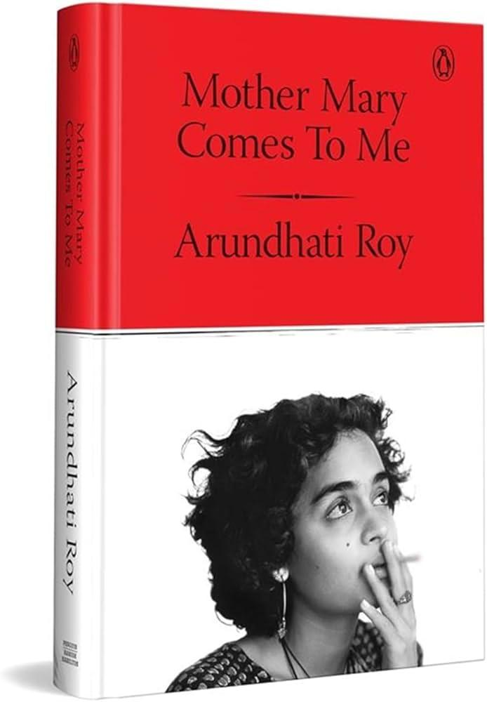

A review of "Mother Mary Comes to Me, by Arundhuti Roy"

"Mother Mary Comes to Me" is a brilliantly constructed, layered memoir
by Booker Prize winner Arundhati Roy. It untangles the complex and raw nature
of the relationship with her mother. The narrative brings to life the emotional
depth of her younger self and her upbringing alongside her brother in a difficult
environment marked by physical and emotional abuse from her mother.
The book is deeply moving and thought-provoking. It transports readers to a young
girl’s life in Kottayam village and her struggle with money, relationships, and odd
jobs to survive, fuelled by a determination to go against all odds and stand brave.
Chapters like 'Madam Houdini and Nothing Man' describe her childhood upbringing,
where phrases like 'get out of my house, get out of my car, and get out of our country'
shaped her strong resolve. Her life moves through the twists and turns of travelling
from a village to the Delhi School of Architecture and eventually becoming a 'jailbird.'
The book reflects on her political activism and her fight for social justice
This book is an authentic blend of varied emotions and a subtle tribute to her mother
in her own way. The sentiment 'She was my shelter and my storm' truly echoes throughout this book."